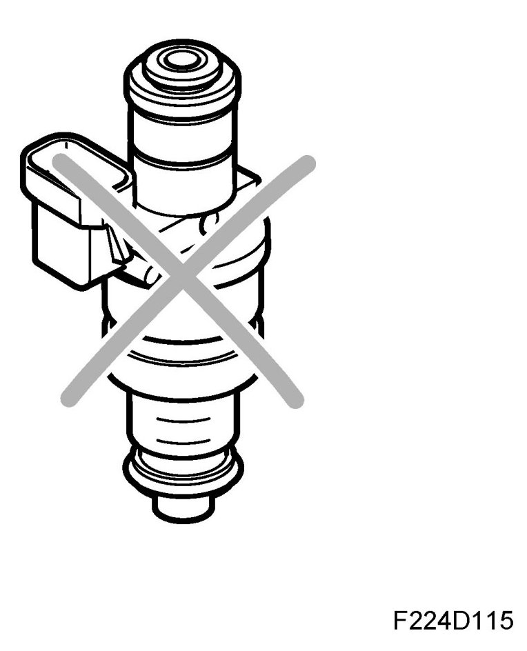

Fuel Shut-Off
Fuel Shut-off

If any of the following criteria are fulfilled, fuel shut-off will take place:
- supply +15 not present.
- fully depressed accelerator pedal during starter motor cranking
- engine speed above 6200 rpm.
- air mass/combustion exceeds a calibrated value, unique for each engine variant.
- immobilizer code faulty.
- major fault in throttle control
- ignition system not supplied with current.
- during engine braking on certain conditions.
- engine torque exceeds a calibrated value during throttle limp-home.